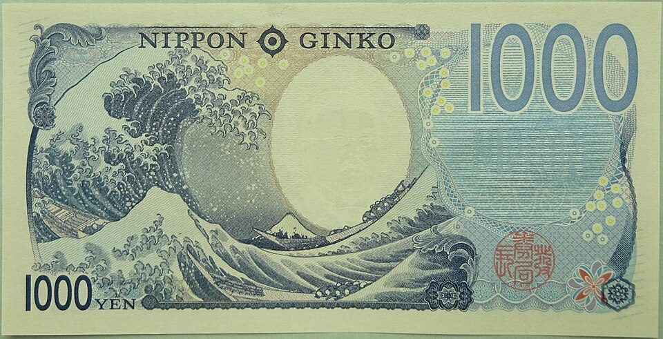
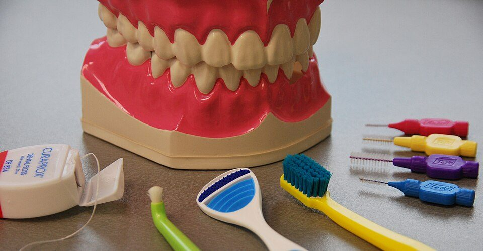
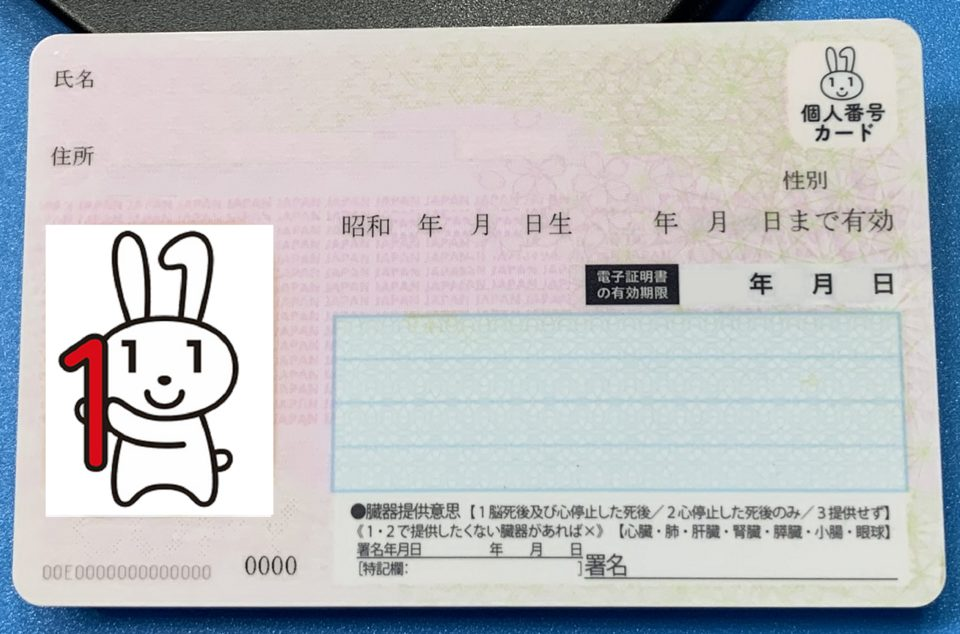

20代のうちにやっておきたいこと：年齢で決まる制度と、お金・健康・仕事の土台（2026年版）
要点まとめ
20代は、年金や検診のように年齢で始まる制度が多く、仕事や家計の土台ができる時期です。この記事では、20代のうちにやっておきたいことを、年齢で条件が決まる制度と、国の統計で分かる20代の実態から選びました。根拠は日本年金機構・厚生労働省・金融庁などの公的資料です。数字は調査日時点のもので、特定の金融商品や医療をすすめるものではありません。30代については30代のうちにやっておきたいことにまとめています。
20代に関わる年齢の節目
年齢で始まる制度を、先に知っておく
20歳の年金加入から、35歳未満の相談窓口まで
お金：年金、ためる制度、奨学金

20歳になったら国民年金。払えなければ学生納付特例
保険料は月17,920円。学生は納付の猶予を申請できる
日本に住む20歳以上60歳未満の人は、国民年金に加入します。厚生年金に入っている会社員・公務員と、その扶養に入っている配偶者は、この案内の保険料の対象外です[1]。学生で保険料を払えない人は「学生納付特例」を申請すると、在学中の納付が猶予されます[2]。
特例を受けた期間は、10年以内なら追納できる
1年分を追納すると、年金額は年約2万円増える
学生納付特例を受けた期間の保険料は、あとから納める（追納）ことができます。追納した分だけ、将来の老齢基礎年金が増えます[13]。追納できるのは10年以内で、早く納めるほど上乗せの加算額がかかりません[2]。
NISAとiDeCoは、制度の枠を知っておく
iDeCoは2026年12月から会社員の上限が月6.2万円に
NISAは、投資で得た利益に税金がかからない口座です[8]。iDeCo（個人型確定拠出年金）は、自分で掛金を出して運用する年金で、2026年12月に掛金の上限が上がります[15]。ここでは制度の枠だけを紹介し、利用や商品をすすめるものではありません。
20代の金融資産は、平均より中央値で見る
単身の20代は3人に1人が金融資産を持っていない
見方: 金融経済教育推進機構（J-FLEC）の調査では、単身の20代の平均は255万円ですが、中央値（真ん中の世帯の額）は37万円です[17]。平均は一部の多い世帯に引き上げられるので、中央値のほうが実感に近いと考えられます。単身の20代で金融資産を持たない人は33.2%でした[17]。
奨学金は、延滞する前に減額や猶予を申し出る
延滞が3か月以上になると、信用情報機関に登録される
日本学生支援機構（JASSO）の奨学金を返している人は、2024年度末で435万人です[21]。返すのが苦しいときは、月々の額を減らす「減額返還」や、返還を先に延ばす「返還期限猶予」を申し出られます[7][21]。延滞の情報は一度登録されると、あとから取り消せません[6]。
自分の信用情報は、500円で確かめられる
CICのネット開示は500円。マイナンバーカードを使う
クレジットカードや分割払いの記録を集める信用情報機関のひとつ、CICでは、本人がスマートフォンで自分の記録を確かめられます[23]。将来ローンを組む前に、延滞の記録がないか見ておくと安心です（筆者の見解）。
健康：20歳から始まる検診
20歳から、子宮頸がん検診（2年に1回）
市町村のがん検診で、20歳以上の女性が対象
市町村のがん検診のうち、20代から対象になるのは子宮頸がん検診です。国の指針では、20歳以上の女性を対象に、2年に1回の検診としています[3]。乳がん・肺がん・大腸がんの検診は40歳から、胃がんは50歳からです[3]。

20歳と30歳は、市町村の歯周病検診の対象
2024年度から、20歳と30歳が対象に加わった
国は、20〜30代は原則として歯科健診の制度の対象になっていないことを課題とし、市町村の歯周病検診の対象に2024年度から20歳と30歳を加えました[4]。国の調査では、歯周ポケットが4mm以上ある人は、20〜24歳で21.2%、25〜29歳で31.6%です[29]。
会社の健診は、40歳未満だと一部を省略できる
血液検査や心電図を省略できないのは35歳と40歳以上
会社は、働く人に1年以内ごとに1回、健康診断を受けさせる義務があります。40歳未満（35歳を除く）は、医師が必要ないと認めれば、血液検査・心電図・腹囲の検査を省略できます[9]。結果の紙で、どの項目を受けたか確かめておくとよいでしょう（筆者の見解）。
運動の習慣は、30〜40代で落ち込む
国の目安は1日60分（約8,000歩）以上の身体活動
2024年の国民健康・栄養調査では、運動の習慣がある人は男性38.5%、女性31.5%で、男女とも30〜40歳代で低くなっています[31]。20〜30歳代の女性のやせ（BMI18.5未満）は16.6%で、国の目標の15%を上回っています[31]。20代のうちに体を動かす習慣を作っておくと、忙しくなる30代にも続けやすいと考えられます（筆者の見解）。
仕事と学び：転職、相談窓口、働くルール
20代は、転職する人がいちばん多い年代
20〜24歳の転職入職率は16.1%（2025年）
見方: 転職入職率は、1年間に転職して入った人の割合です。20代は15〜16%台で、30代後半には8%台に下がります[5]。転職で賃金が「増えた」人は、20〜24歳で55.2%、25〜29歳で49.8%で、「減った」人を上回っています[33]。
35歳未満が使える、公的な相談窓口
わかものハローワークは、おおむね35歳未満が対象
有給休暇と残業の上限を知っておく
入社6か月で有休10日。うち年5日は会社が取らせる
労働基準法では、6か月続けて働き、8割以上出勤した人に10日の年次有給休暇が与えられます。年10日以上ある人には、会社が年5日を取らせる義務があります[37]。残業（時間外労働）は、原則として月45時間・年360時間までです[37]。
副業をするなら、20万円の線と住民税の申告
給与以外の所得が20万円を超えると確定申告が必要
国のガイドラインは、会社に対して、原則として副業・兼業を認める方向にするよう示しています[39]。給与を1か所から受けている会社員は、給与以外の所得（収入から経費を引いた額）が20万円を超えると、所得税の確定申告が必要です[40]。
暮らしと家族：トラブル、手続き、結婚
20代のトラブルは「もうけ話」と「美容」が多い
困ったら、消費者ホットライン188に相談する
国民生活センターは、成人の若者の相談には、副業・投資などのもうけ話と、エステなどの美容に関するものが多いとまとめています[42]。2026年5月には、「簡単なタスクで稼げる」とうたう副業で20〜30代の被害が急に増えているとして、注意を呼びかけました[43]。

マイナンバーカードは、電子証明書が先に切れる
カードは10回目の誕生日まで、電子証明書は5回目まで
18歳以上のマイナンバーカードは、発行から10回目の誕生日まで使えます。ただし、カードに入っている2つの電子証明書は、発行から5回目の誕生日で切れます[46]。信用情報のネット開示のように、電子証明書を使う手続きもあります[23]。
くわしく
- パスポートは、2026年7月1日の申請分から18歳以上の10年旅券の手数料が約9,000円に下がった（新潟県の案内）[47]
結婚するなら、29歳以下で上乗せされる補助
夫婦とも29歳以下なら、新生活の補助の上限は60万円
市町村によっては、結婚に伴う住まいの費用や引越し費用を補助しています。国の交付金の基準では、夫婦とも39歳以下で世帯所得500万円未満が対象で、上限は30万円、夫婦とも29歳以下なら60万円です[11]。
今回確認できなかった点
- 急な出費に備える貯金の目安（生活費の何か月分か）を、公的機関がみずから示した資料
- 20代のがん検診の受診率と、HPV検査の方法を取り入れた市町村
- 男性のHPVワクチンを定期接種にするかどうかの結論
- 結婚新生活の補助を実施している市町村の全国の一覧
- パスポートの手数料の正確な額（外務省のページを確認できなかった）
関連する記事
出典（51件）
閲覧日はいずれも2026年11月8日
- 国民年金の加入と保険料のご案内（20歳になった皆様と世帯主の方へ）2026年度版（日本年金機構）
- 国民年金保険料の学生納付特例制度（日本年金機構）
- がん予防重点健康教育及びがん検診実施のための指針（令和7年12月24日一部改正）（厚生労働省）
- 歯科口腔保健の推進に向けた取組等について（2025年3月）（厚生労働省 医政局歯科保健課）
- 雇用動向調査 令和7年 年計 参考表2「就業形態、性、年齢階級別 労働者数 及び 労働移動率」（厚生労働省（e-Stat））
- よくある質問「個人信用情報機関に延滞情報が登録されますか。」（日本学生支援機構（JASSO））
- 月々の返還額を少なくする（減額返還制度）（日本学生支援機構（JASSO））
- NISA特設ウェブサイト「NISAを知る」（金融庁）
- 労働安全衛生法に基づく健康診断を実施しましょう（リーフレット）（厚生労働省・都道府県労働局・労働基準監督署）
- 若者への就職支援（厚生労働省）
- 地域少子化対策重点推進交付金（令和8年度）概要（こども家庭庁）
- わかものハローワーク（厚生労働省）
- 国民年金保険料の追納制度について（チラシ）（日本年金機構）
- 障害基礎年金の受給要件・請求時期・年金額（日本年金機構）
- iDeCoがパワーアップします!（令和8年12月から）リーフレット（厚生労働省）
- iDeCoの拠出限度額の引き上げにあわせてiDeCo掛金額変更をご希望の方へ（2026年8月）（国民年金基金連合会（iDeCo公式サイト））
- 単身世帯 各種分類別データ（令和7年）（金融経済教育推進機構（J-FLEC））
- 二人以上世帯 各種分類別データ（令和7年）（金融経済教育推進機構（J-FLEC））
- 家計の金融行動に関する世論調査 2025年（金融経済教育推進機構（J-FLEC））
- 家計の金融行動に関する世論調査 単身世帯調査 調査結果（2025年）（金融経済教育推進機構（J-FLEC））
- 奨学金事業に関するデータ集（令和8年1月）（日本学生支援機構（JASSO））
- 減額返還制度の収入・所得金額の目安（日本学生支援機構（JASSO））
- インターネットで開示する（株式会社シー・アイ・シー（CIC、指定信用情報機関））
- よくある質問「インターネット開示の手数料はいくらですか？」（株式会社シー・アイ・シー（CIC、指定信用情報機関））
- 新たなステージに入ったがん検診の総合支援事業（子宮頸がん・乳がん検診）（杉並区）
- 2025（令和7）年 国民生活基礎調査の概況「III 世帯員の健康状況」（厚生労働省）
- 子宮頸がん予防ワクチン（HPVワクチン）（堺市）
- HPVワクチンの男性接種に関する費用対効果分析について（厚生労働省（厚生科学審議会 ワクチン評価に関する小委員会 資料、2026年7月22日））
- 令和4年 歯科疾患実態調査結果の概要（厚生労働省）
- 健康増進法施行規則の一部を改正する省令の公布について（令和8年3月31日）（厚生労働省 健康・生活衛生局長（堺市掲載））
- 令和6年 国民健康・栄養調査結果の概要（厚生労働省）
- 健康づくりのための身体活動・運動ガイド2023（概要）（厚生労働省）
- 令和7（2025）年 雇用動向調査結果の概況（厚生労働省）
- 新規学卒就職者の離職状況（令和5年3月卒業者）を公表します（2026年10月23日）（厚生労働省）
- 地域若者サポートステーション（厚生労働省）
- キャリア形成・リスキリング支援センター（厚生労働省（キャリア形成・リスキリング推進事業））
- 労働基準法（昭和22年法律第49号）（デジタル庁 e-Gov法令検索）
- 総合労働相談コーナーのご案内（厚生労働省）
- 副業・兼業の促進に関するガイドライン（令和4年7月改定）（厚生労働省）
- タックスアンサー No.1900 給与所得者で確定申告が必要な人（国税庁）
- 住民税（市県民税）の申告（個人）（神戸市）
- 「未成年者の消費者トラブルについての現況調査」調査報告書（2025年3月）（国民生活センター）
- 簡単なタスクで稼げるとうたう副業トラブルに注意！（2026年5月19日）（国民生活センター）
- クーリング・オフ（国民生活センター）
- 消費者ホットライン（消費者庁）
- マイナンバー制度とマイナンバーカード「マイナンバーカード」（総務省）
- 旅券手数料の改定について（令和8年7月1日申請分から引き下げとなります。）（新潟県）
- 結婚新生活支援事業（令和8年度）（新潟県）
- 地域少子化対策重点推進交付金実施要領（令和8年度）（こども家庭庁）
- 令和7（2025）年 人口動態統計月報年計（概数）の概況（厚生労働省）
- 第17回出生動向基本調査 結果の概要（報道発表資料、2026年9月11日）（国立社会保障・人口問題研究所）
写真・画像の出典（3件）
- 2024年に発行が始まった千円札（裏面）
写真: Heavy Frisker／Wikimedia Commons（CC BY-SA 4.0） - 歯の手入れの道具（イメージ）
写真: Milenafoto／Wikimedia Commons（CC BY-SA 3.0） - マイナンバーカードの見本と読み取り機
写真: Project Kei／Wikimedia Commons（CC BY 4.0）